这些材料仅供参考，这些建议并不能保证完全符合法律法规。您应当联系一名律师，以获取关于开发研究类应用的相关建议，以及其他适用的法律法规。
创建调查
调查任务 (Survey Task) 是表示一系列问题的步骤对象 (ORKStep) 集合，例如说『您正在服用何种药物？』，或者『您昨晚睡了几个小时？』之类的问题。您可以收集单个步骤的调查结果，也可以收集整个任务的调查结果。
要创建一个用以展示调查的任务，步骤如下：
1. 创建步骤
调查模块不仅提供了只包含一个问题的步骤 (ORKQuestionStep)
，还提供了可以包含多个项目的表单步骤
(ORKFormStep)。您同样可以使用指示步骤
(ORKInstructionStep) 来介绍调查的相关信息，或者为用户提供明确的指示。
每一个步骤都拥有自己的步骤视图控制器，这个控制器定义了用以展示这种类型步骤的用户界面。当某个任务视图控制器需要展示一个步骤的时候，它会将合适的步骤视图控制器进行实例化，然后将其展示出来。如果有必要的话，您可以通过实现任务视图控制器委托方法 (参见
ORKTaskViewControllerDelegate)，来自定义每一个步骤视图控制器的细节信息，例如按钮标题以及风格。
指示步骤
指示步骤用以说明某个任务的目的所在，并且为用户提供相关的指示。ORKInstructionStep 对象包含了一个标识符、标题、文本、详情文本，以及一个图片。由于指示步骤并不会收集任何数据，不过它仍然会生成一个空的
ORKStepResult 来记录指示信息显示在屏幕上的时间。
ORKInstructionStep *step =
[[ORKInstructionStep alloc] initWithIdentifier:@"identifier"];
step.title = @"选择调查";
step.text = @"本调查可以帮助我们发现您是否适合参与我们的研究";
创建一个如上面代码中所示的步骤，将其置入到任务当中，然后在任务视图控制器中展示出来，这样就会产生类似于这样的东西：
问题步骤
问题步骤 (ORKQuestionStep) 代表了一个简单的问题，它由一个简短的 title 和一个更长、更详细的 text组成。可以通过设置回答格式来配置用户可以输入类型的数据。您同样可以为用户提供一个选项，让他们能够通过步骤的 optional 属性来跳过问题。
对于数字和文本格式的回答，问题步骤的 placeholder 属性指定了一个提示，其会在输入框中对预期值进行描述。
问题步骤会生成一个步骤结果，就和指示步骤产生的结果一样，用来表明用户面对屏幕上的这个问题面对了多长时间。它同样也包含了一个 ORKQuestionResult 子类，用来报告用户的回答。
下列代码配置了一个简单的数字问题步骤：
ORKNumericAnswerFormat *format =
[ORKNumericAnswerFormat integerAnswerFormatWithUnit:@"岁"];
format.minimum = @(18);
format.maximum = @(90);
ORKQuestionStep *step =
[ORKQuestionStep questionStepWithIdentifier:kIdentifierAge
title:@"您的年龄是多少？"
answer:format];
将这个问题步骤添加到任务当中，然后展示这个任务，这会生成一个这样的屏幕：
表单步骤
当用户需要同时回答多个相互联系的问题时，最好使用表单步骤 (ORKFormStep)，这样可以将这些步骤全部展现在一个页面当中。表单步骤不仅支持将所有的问题步骤全部应用上相同的回答格式，而且还能够包含多个项目 (ORKFormItem)，每个项目都可以包含自己的回答格式。
表单可以通过与只包含一个标题的一个额外 “虚拟”表单项目组合构成多个章节。参见 ORKFormItem 参考文档获取更多信息。
表单步骤的结果和问题步骤的结果类似，只是每个表单项目当中都会包含有问题结果。使用表单项目的标识符 (the identifier 属性) 可以获取相应的表单项目所对应的结果。
例如，下面这段代码展示了如何创建一个请求某些基础问题的一个表单，使用从 iOS 中的 HealthKit 提取的默认值来填充这些数据输入框：
ORKFormStep *step =
[[ORKFormStep alloc] initWithIdentifier:kFormIdentifier
title:@"表单"
text:@"单页展示含有多个输入框的表单组"];
NSMutableArray *items = [NSMutableArray new];
ORKAnswerFormat *genderFormat =
[ORKHealthKitCharacteristicTypeAnswerFormat
answerFormatWithCharacteristicType:
[HKCharacteristicType characteristicTypeForIdentifier:HKCharacteristicTypeIdentifierBiologicalSex]];
[items addObject:
[[ORKFormItem alloc] initWithIdentifier:kGenderItemIdentifier
text:@"性别"
answerFormat:genderFormat];
// 包含了一个章节分隔符
[items addObject:
[[ORKFormItem alloc] initWithSectionTitle:@"基本信息"]];
ORKAnswerFormat *bloodTypeFormat =
[ORKHealthKitCharacteristicTypeAnswerFormat
answerFormatWithCharacteristicType:
[HKCharacteristicType characteristicTypeForIdentifier:HKCharacteristicTypeIdentifierBloodType]];
[items addObject:
[[ORKFormItem alloc] initWithIdentifier:kBloodTypeItemIdentifier
text:@"血型"
answerFormat:bloodTypeFormat];
ORKAnswerFormat *dateOfBirthFormat =
[ORKHealthKitCharacteristicTypeAnswerFormat
answerFormatWithCharacteristicType:
[HKCharacteristicType characteristicTypeForIdentifier:HKCharacteristicTypeIdentifierDateOfBirth]];
ORKFormItem *dateOfBirthItem =
[[ORKFormItem alloc] initWithIdentifier:kDateOfBirthItemIdentifier
text:@"出生日期"
answerFormat:dateOfBirthFormat];
dateOfBirthItem.placeholder = @"出生日期";
[items addObject:dateOfBirthItem];
// ...诸如此类，添加额外的项目
step.formItems = items;
上述代码会生成类似于以下的界面：
回答格式
在 ResearchKit™ 框架中，回答格式 (Answer Format) 决定了用户应该如何回答被询问的问题，或者如何回答表单中项目的问题。例如，试想有这样一个调查问题：“从 1 到 10，您所感受到的疼痛是多少？”。这个问题的回答格式自然而然应该是一个处于这个范围之内的不连续标度，因此您可以使用标度回答格式 (ORKScaleAnswerFormat)，然后设置其 minimum 以及 maximum 属性来获得所需的范围。
下方的截图展示了 ResearchKit 框架提供的标准回答格式。
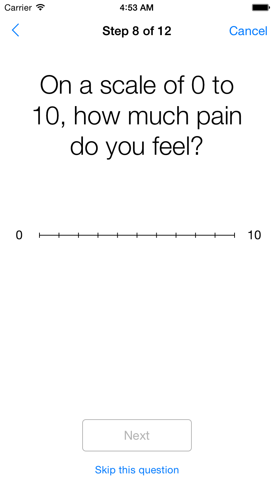标度回答格式
 是非回答格式
是非回答格式
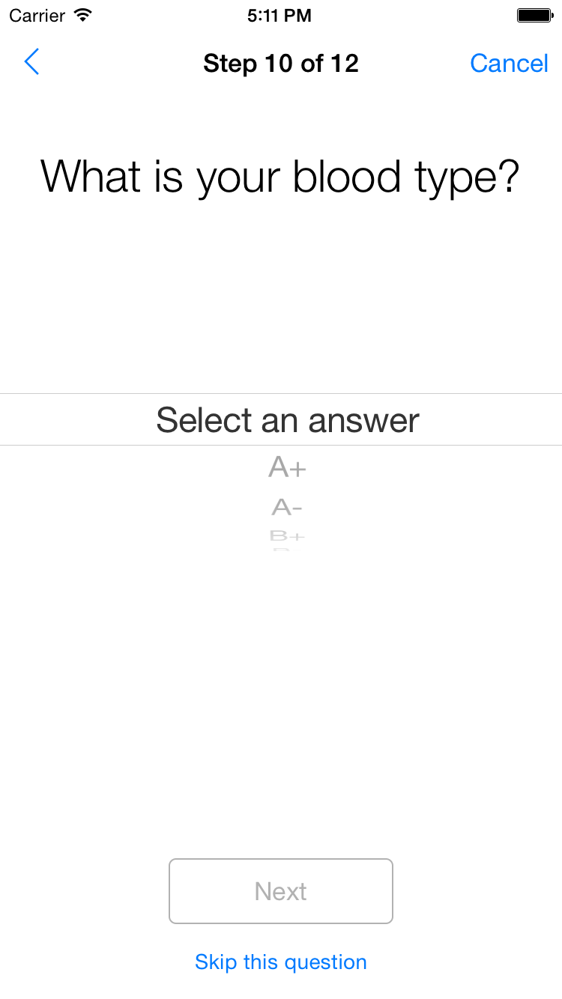值选回答格式
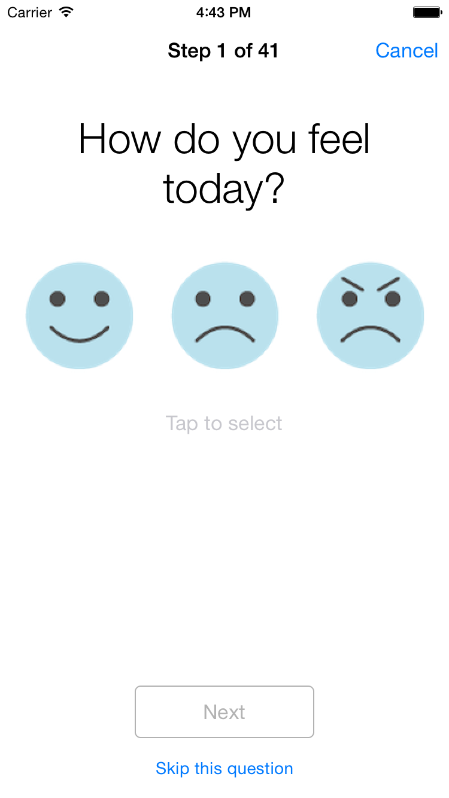图选回答格式
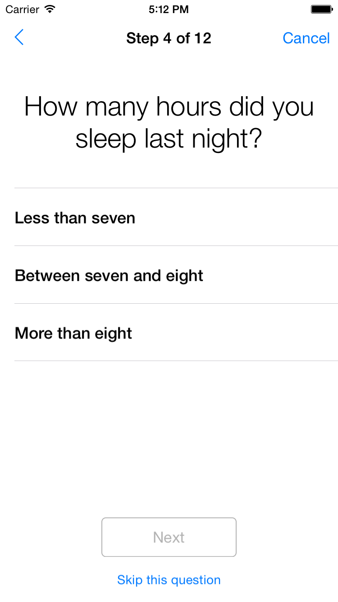字选回答格式（单行选择回答）
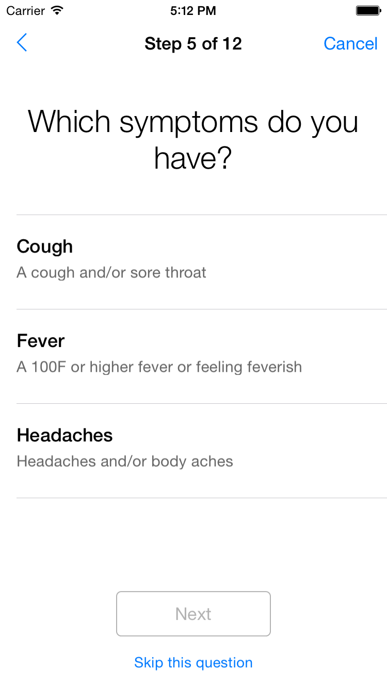字选回答格式（多行选择回答）
 数选回答格式
数选回答格式
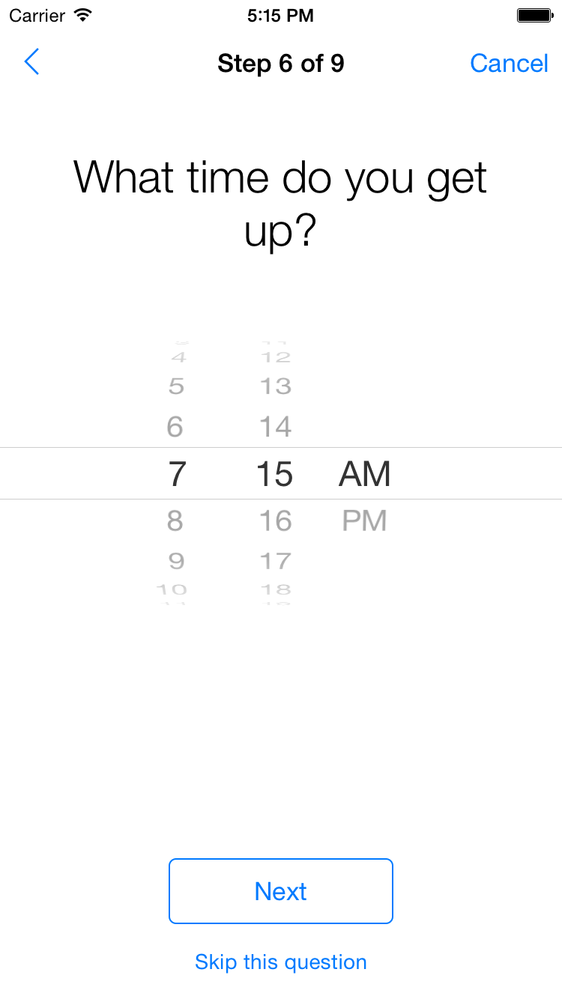时间回答格式
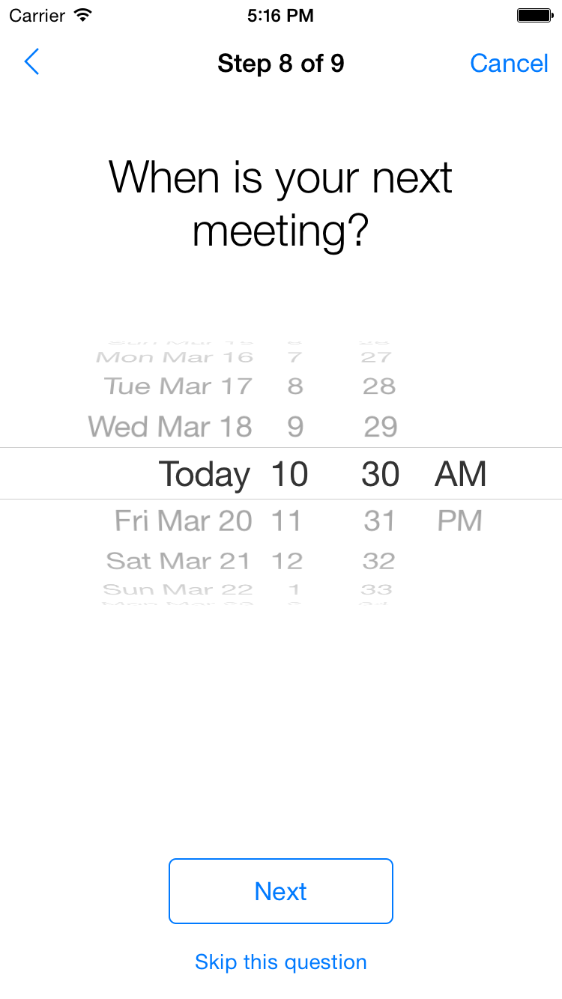日期回答格式
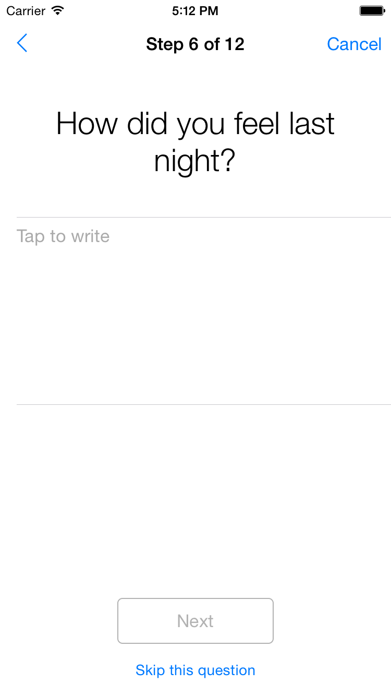文本回答格式（不受限的文本框）
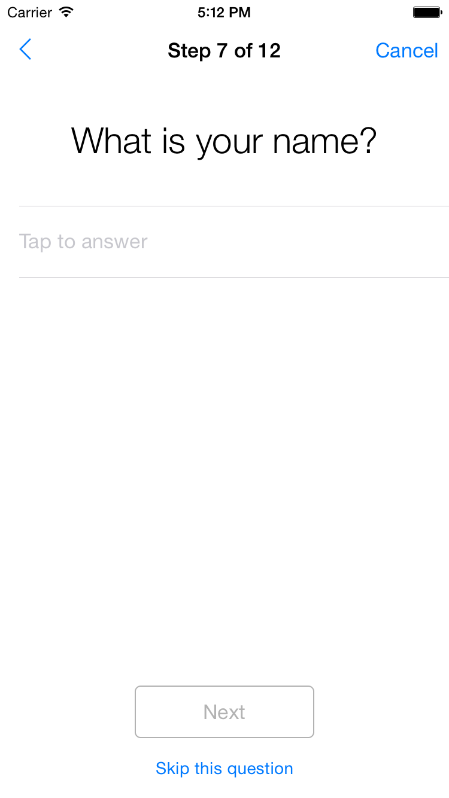文本回答格式（受限的文本框）
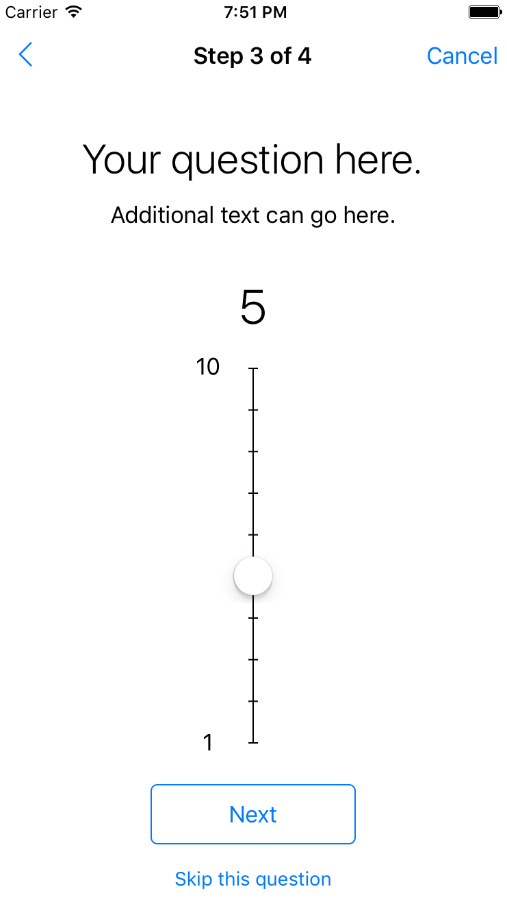标度回答格式（纵向）
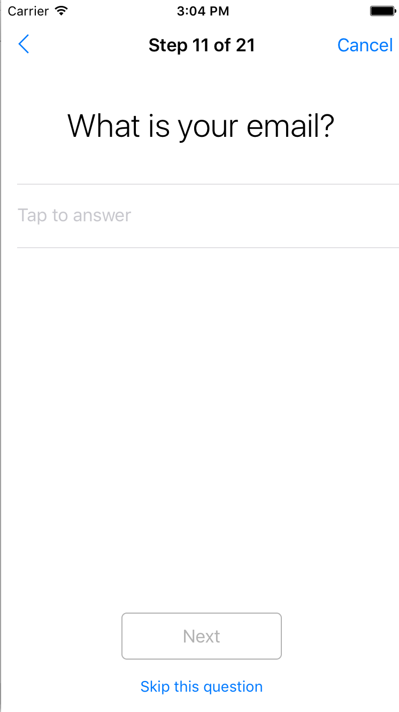邮件回答格式
除了前面所说的回答格式之外，ResearchKit 框架还提供了特殊的回答格式，以便能够询问用户可能已经存储在“健康”应用当中的数据或者体征。当使用 HealthKit 回答格式的时候，任务视图控制器会自动弹出一个健康数据访问请求窗口给用户（如果您的应用还没有获取这方面信息的授权的话）。展示的详情信息将会被自动填充，并且，如果用户已经授予访问权限的话，这个字段默认将会从用户的健康数据库中获取当前值。
2. 创建调查任务
一旦您创建完一个或多个步骤之后，创建一个 ORKOrderedTask 对象来持有这些步骤。下方的代码展示了将一个布尔步骤添加到任务当中的过程。
// 创建一个准备包含在任务当中的是非步骤
ORKStep *booleanStep =
[[ORKQuestionStep alloc] initWithIdentifier:kNutritionIdentifier];
booleanStep.title = @"您是否在服用保健品？";
booleanStep.answerFormat = [ORKBooleanAnswerFormat new];
booleanStep.optional = NO;
// 创建一个含有此步骤的任务
ORKOrderedTask *task =
[[ORKOrderedTask alloc] initWithIdentifier:kTaskIdentifier
steps:@[booleanStep]];
您必须要为每个步骤设置一个字符串标识符。步骤标识符在任务当中应当是独一无二的，因为它是将任务层次中的步骤与结果层次中的步骤结果连接起来的关键所在。
要展示这个任务的话，将其赋给一个任务视图控制器，然后展示这个控制器。下方的代码展示了如何创建一个任务视图控制器，然后用 Modal 方式将其展示出来。
// 使用任务来创建一个任务视图控制器，然后设置委托
ORKTaskViewController *taskViewController =
[[ORKTaskViewController alloc] initWithTask:task taskRunUUID:nil];
taskViewController.delegate = self;
// 展示该任务视图控制器
[self presentViewController:taskViewController animated:YES completion:nil];
注意：ORKOrderedTask 假定您始终会展示所有的问题，并且永远不会根据上一个问题的回答来决定下一个需要展示的问题。要引入这方面的条件逻辑的话，您需要继承
ORKOrderedTask，或者自行实现 ORKTask 协议来完成这个步骤。
3. 收集结果
任务视图控制器的 result 属性将会返回任务的结果。每个用户查看的步骤视图控制器都会生成一个步骤结果 (ORKStepResult)。只要用户在任务当中前往下一个步骤的时候，任务视图控制器就会收集这些结果，这样便可以生成一个 ORKTaskResult。
任务结果和步骤结果都是结果的集合，在其中可以包含其他的结果对象。例如，任务结果可以包含一个步骤结果的数组。
包含在步骤结果当中的结果类型取决于步骤的类型。例如，问题步骤将会生成一个问题结果 (ORKQuestionResult)；表单步骤将会为每一个表单项目生成一个问题步骤；然后带有记录器的活动任务通常都会为每个记录器生成一个结果。
结果的层级与任务和步骤的输入模型层级非常契合，如下图所见：
除了这些属性之外，每个结果都还包含有一个标识符。这个标识符用以连接结果和生成该结果的模型对象（任务、步骤、表单项目，或者记录器）。每个结果还包含了起止时间，您可以分别通过 startDate 和 endDate 属性来使用。这些属性可以用来推断用户在回答这个步骤中花费了多长时间。
决定下一个步骤的步骤结果
有些时候，在展示下一个步骤之前知晓当前步骤的结果是很重要的。例如，试想有这样一个步骤在询问：“您当前有发热症状么？”。如果用户回答“ Yes”，那么下一个问题可能会是“您当前的体温是多少？”；否则的话就可能会是“您还有其他的健康问题吗？”。
为了在您的任务当中增加自定义条件行为，您可以使用有序任务 (ORKOrderedTask) 或者可导航的有序任务 (ORKNavigableOrderedTask)，然后重载特定的 ORKTask 方法，比如说 stepAfterStep:withResult 以及 stepBeforeStep:withResult: ，这些方法都需要调用 super 方法。
有序任务
诸如调查或者活动任务之类的顺序（静态）任务，可以用有序任务来表示。
下面的这个例子演示了如何继承
ORKOrderedTask，从而能够根据用户对某个是非问题的回答来提供不同的步骤集。虽然代码展示的是步进方法，但是相应的“步进”实现通常也是必要的。
- (ORKStep *)stepAfterStep:(ORKStep *)step
withResult:(idORKTaskResultSource)result {
NSString *identifier = step.identifier;
if ([identifier isEqualToString:self.qualificationStep.identifier])
{
ORKStepResult *stepResult = [result stepResultForStepIdentifier:identifier];
ORKQuestionResult *result = (ORKQuestionResult *)stepResult.firstResult;
if ([result isKindOfClass:[ORKBooleanQuestionResult class]])
{
ORKBooleanQuestionResult *booleanResult = result;
NSNumber *booleanAnswer = booleanResult.booleanAnswer;
if (booleanAnswer)
{
return booleanAnswer.boolValue ? self.regularQuestionStep : self.terminationStep;
}
}
}
return [super stepAfterStep:step withResult:result];
}
可导航的有序任务
可导航的有序任务 (ORKNavigableOrderedTask) 从有序任务 (ORKOrderedTask) 继承了相关的行为。除了从有序任务继承相关的行为之后，它还提供了根据用户对问题的回答来展示不同步骤组的功能。
当用户在任务中的不同步骤间进行导航的时候，您可以通过添加一个条件步骤导航来添加条件。例如，当用户从当前步骤前往下一个步骤的时候，添加一个导航规则来获取新的目标步骤。您不能在相同的步骤中添加多个导航规则。如果您添加了多个导航规则的话，那么最新的那个规则会替代其他规则运行。
例如，如果要仅当用户对上一个问题的回答是“是”时，才展示调查问题的话，您可以使用 ORKPredicateStepNavigationRule；或者如果您想要在两个步骤之间定义一个随机跳转的话，您可以使用 ORKDirectStepNavigationRule。
下面这个例子演示了您如何添加一个导航规则，以便能够根据用户对症状类型的选择，在任务中前往不同的步骤。例如，在“症状”步骤中当用户没有选择“头痛”的时候，就前往“其他症状”步骤。否则，默认的话将前往下一个步骤（应用常规的有序任务 (ORKOrderedTask) applies)。
ORKNavigableOrderedTask *task = [[ORKNavigableOrderedTask alloc] initWithIdentifier:StepNavigationTaskIdentifier steps:steps];
// 构建一个导航规则
ORKPredicateStepNavigationRule *predicateRule = nil;
NSPredicate *predicateHeadache = [ORKResultPredicate predicateForChoiceQuestionResultWithResultIdentifier:@"symptom" expectedString:@"headache"];
// 用户在症状步骤中没有选择“头痛”
NSPredicate *predicateNotHeadache = [NSCompoundPredicate notPredicateWithSubpredicate:predicateHeadache];
predicateRule = [[ORKPredicateStepNavigationRule alloc] initWithResultPredicates:@[ predicateNotHeadache ]
destinationStepIdentifiers:@[ @"other_symptom" ] ];
[task setNavigationRule:predicateRule forTriggerStepIdentifier:@"symptom"];
在任务完成后存储结果
当任务完成后，您可以将结果进行存储或者上传。实现的方法包括了将某些表单中的结果层级进行序列化，或者使用内置的 NSSecureCoding 支持，也可以使用您应用所支持的其他格式化方式。
如果您的任务可以生成文件输出的话，那么文件通常都是被一个 ORKFileResult 对象所引用的，它们将会放置于您在任务视图控制器当中所设置的输出目录当中。当您完成任务之后，其中一个实现可以是将结果层级序列化到输出目录当中，然后将整个输出目录压缩，然后将其共享出去。
在下列示例当中，当任务成功完成之后，结果会通过
NSKeyedArchiver 进行归档。如果您选择支持存储并恢复任务现场的话，用户或许会将任务进行存储，因此该示例同样也演示了如何获得恢复后的数据，然后这个数据随后可能会被用于恢复任务展示。
- (void)taskViewController:(ORKTaskViewController *)taskViewController
didFinishWithReason:(ORKTaskViewControllerFinishReason)reason
error:(NSError *)error
{
switch (reason) {
case ORKTaskViewControllerFinishReasonCompleted:
// 首先将结果对象进行归档
NSData *data = [NSKeyedArchiver archivedDataWithRootObject:taskViewController.result];
// 将数据存储在硬盘上进行文件保护
// 或者安全地上传到远程服务器
// 如果对处理文件结果有其他需求的话
// 您也可以对 outputDirectory 进行压缩
break;
case ORKTaskViewControllerFinishReasonFailed:
case ORKTaskViewControllerFinishReasonDiscarded:
// 通常而言，应当丢弃该结果
// 考虑要清除输出目录的内容directory.
break;
case ORKTaskViewControllerFinishReasonSaved:
NSData *data = [taskViewController restorationData];
// 持续存储恢复的数据，以便之后可以使用
// 正常情况下，当您需要恢复的时候，不能删除输出目录
break;
}
}